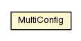

pt.ist.fenixframework
Class MultiConfig

java.lang.Object
 pt.ist.fenixframework.MultiConfig
pt.ist.fenixframework.MultiConfig
public class MultiConfig
- extends Object
Stores multiple Fenix Framework Configurations. Each configuration is automatically
associated with a key obtained by invoking BackEnd.getName() on the config's BackEnd.
Setting up multiple configurations allows the Fenix Framework to automatically choose the
configuration to use, according to the backend that generated the domain model.
For this mechanism to work as expected when using explicit initialization (see FenixFramework), the programmer must initialize the framework by invoking the FenixFramework.initialize(MultiConfig) method (instead of FenixFramework.initialize(Config)). Before doing so, however, the programmer must create an
instance of MultiConfig and add each of the available configurations (via add(Config)).
NOTE: This class is not thread-safe. It is not expectable to have multiple threads attempting to
concurrently add configurations the same MultiConfig instance. However, it is possible (albeit
of questionable usefulness) to attempt initialization of the framework from multiple threads,
each using a different instance of MultiConfig.
- See Also:
FenixFramework
| Methods inherited from class java.lang.Object |
clone, equals, finalize, getClass, hashCode, notify, notifyAll, toString, wait, wait, wait |
UNKNOWN_BACKEND
public static final String UNKNOWN_BACKEND
- See Also:
- Constant Field Values
MultiConfig
public MultiConfig()
add
public Config add(Config config)
- Add a configuration to the set of available configurations. Only one configuration per
backend is supported. If more than one configuration per backend is added, the last will
replace the previous.
- Returns:
- the previous configuration for the same backend, or null if there was none
get
public Config get(String backEndName)
Copyright © 2013. All Rights Reserved.